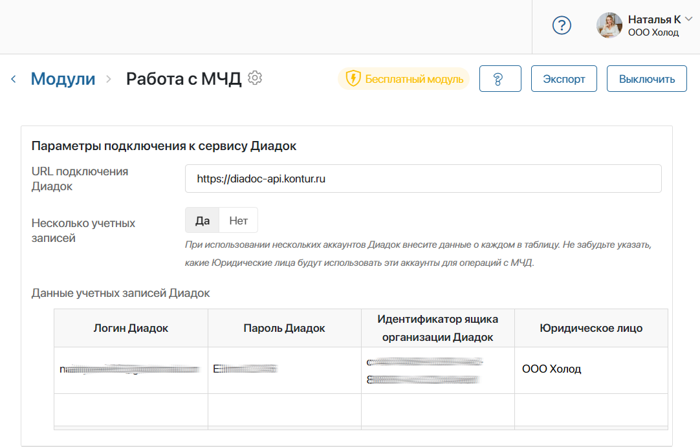
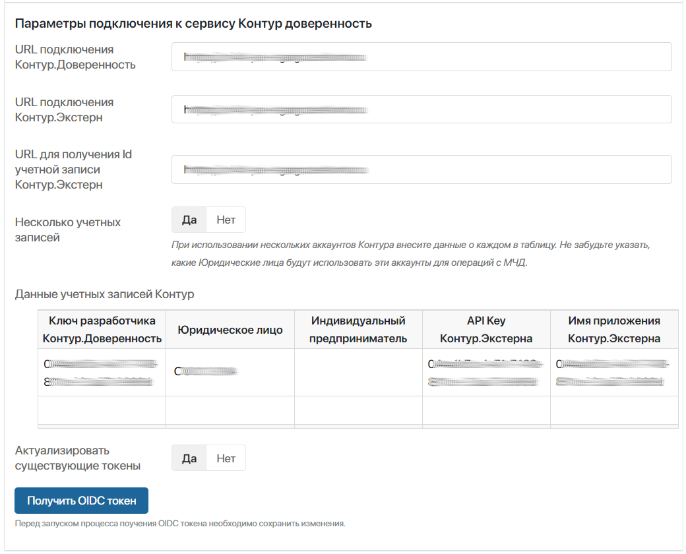
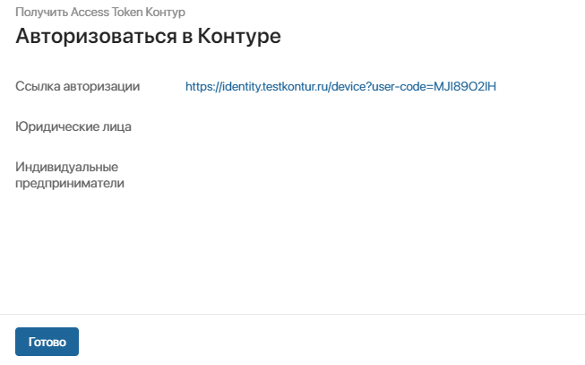
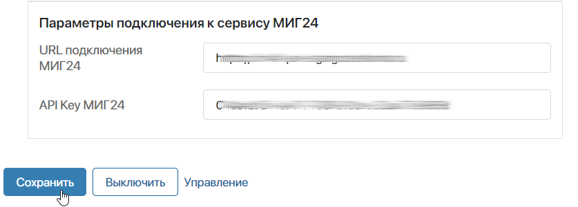
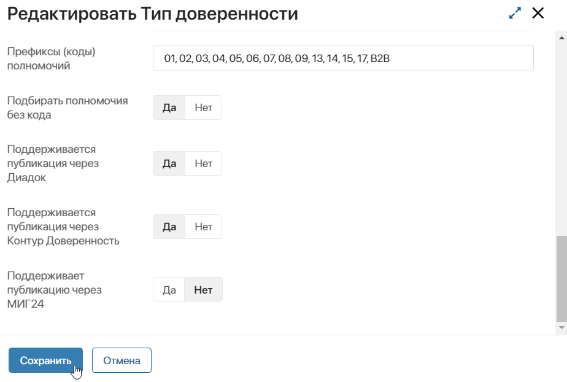
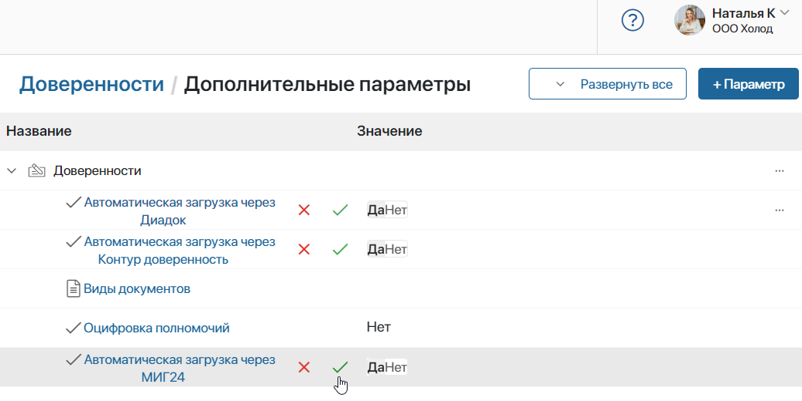

В бизнес-решении Управление МЧД предусмотрена интеграция с сервисами обработки машиночитаемых доверенностей: Диадок, Контур.Доверенность, МИГ24.
При настроенном подключении созданные в ELMA365 доверенности будут передаваться в сервис. Вы сможете просматривать их и отслеживать статусы. Также с помощью сервиса загруженные в ELMA365 файлы доверенностей от контрагентов будут проверяться на соответствие формата и корректность данных. Кроме того, доступна настройка автоматической регистрации доверенностей в распределённом реестре ФНС и их отзыв.
Можно подключить один или несколько сервисов. Для Диадок и Контур.Доверенность доступно также добавление нескольких аккаунтов, привязанных к разным юридическим лицам.
Подключение сервисов выполняется в несколько этапов:
- Включается модуль Работа с МЧД, на его странице заполняются параметры для выбранного сервиса: Диадок, Контур.Доверенность, МИГ24.
- Выбирается сервис обработки для каждого типа доверенности.
- Включаются дополнительные параметры решения для настройки авторегистрации.
Настроить модуль «Работа с МЧД»
начало внимание
Настраивать модуль Работа с МЧД могут только пользователи, входящие в группу Администраторы. Перед началом настройки убедитесь, что для компании создан аккаунт в сервисе Диадок, Контур.Доверенность или МИГ24.
конец внимание
Для подключения сервисов перейдите в раздел Администрирование > Модули и выберите модуль Работа с МЧД. На странице модуля параметры подключения заполняются для каждого сервиса по отдельности.
Подключение к сервису Диадок
При настройке интеграции с сервисом Диадок вы можете добавить несколько аккаунтов, связанных с разными юридическими лицами. Тогда публикация и регистрация доверенности будут осуществляться в аккаунте, зарегистрированном на юридическое лицо, которое выступает в качестве доверителя в документе.
Кроме того, с помощью сервиса Диадок можно проверять на соответствие формата и корректность входящую доверенность от контрагента, которая была загружена в виде файла формата .xml, и .sig-файл её подписи. В карточке входящей доверенности результаты проверок отображаются в виджете на боковой панели. Подробнее читайте в статье «Загрузить входящую доверенность».

Заполните параметры подключения к сервису Диадок на странице модуля:
- URL подключения Диадок — укажите адрес подключения сервиса: https://diadoc-api.kontur.ru;
- Несколько учетных записей — выберите Да, если вы хотите привязать несколько аккаунтов и регистрировать в них доверенности. В этом случае заполните появившуюся таблицу, указав в её столбцах логин, пароль, идентификатор ящика и соответствующую организацию из справочника раздела МЧД > Юридические лица.
Если добавляется один аккаунт, данные указываются в отдельных полях; - Логин Диадок, Пароль Диадок — укажите логин и пароль учётной записи в Диадок;
- Идентификатор ящика организации Диадок — для заполнения поля перейдите в личный кабинет сервиса Диадок и скопируйте значение идентификатора в URL-адресе страницы: https://diadoc.kontur.ru/значение_идентификатора/Folder/Inbox.
Параметры подключения к сервису Контур.Доверенность
Для сервиса Контур.Доверенность можно настроить несколько аккаунтов для распределения доверенностей от разных доверителей. Помимо юридических лиц указать можно и индивидуального предпринимателя, если на него зарегистрирован аккаунт в сервисе.
Чтобы регистрировать доверенности типа ФНС 5.01 (B2G 002) необходимо внести данные для подключения к Контур.Доверенность, а также к Контур.Экстерна.
Заполните параметры подключения к сервису Контур.Доверенность на странице модуля в несколько этапов:

- URL подключения Контур.Доверенность — укажите адрес подключения;
- Несколько учетных записей — выберите Да для добавление нескольких аккаунтов сервиса. Заполните появившуюся таблицу, указав в её столбцах ключ разработчика, соответствующую организацию или индивидуального предпринимателя из справочников раздела МЧД, а также данные Контур.Экстерна для регистрации доверенностей типа ФНС 5.01 (B2G 002).
Если добавляется один аккаунт, информация заполняется в отдельных полях; - Ключ разработчика Контур.Доверенность — укажите API-ключ сервиса Контур.Доверенность.
Чтобы получить ключ и URL, обратитесь в техподдержку на сайте Контур.Доверенность.
Для регистрации доверенностей типа ФНС 5.01 (B2G 002) в Контур.Доверенность выполняются дополнительные настройки:
- Запросите данные в техподдержке на сайте Контур.Доверенность и заполните поля:
- URL подключения Контур.Экстерн;
- URL для получения ID учетной записи Контур.Экстерн;
- API.key Контур.Экстерна;
- Имя приложения Контур.Экстерна;
Обратите внимание, если вы добавляете несколько учётных записей, ключ и имя приложения Контур.Экстерна указывается в таблице для каждого аккаунта в отдельности.
- Нажмите Сохранить на странице модуля, чтобы не потерять внесённые параметры.
- Вернитесь к параметрам подключения на странице и нажмите кнопку Получить OIDC токен, чтобы запросить токен подключения у сервиса идентификации Контур.Экстерн.
- Администратору назначается задача для авторизации в Контуре. В карточке задачи перейдите по указанной ссылке и завершите авторизацию на сервисе. Затем закройте задачу.

Полученный токен действует в течение суток. После подключения сервиса токен автоматически обновляется.
- Для повторного запроса OIDC токена по уже существующим учётным записям, в поле Актуализировать существующие токены выберите Да запустите процесс авторизации, нажав кнопку Получить OIDC токен.
Параметры подключения к сервису МИГ24
Подключение позволяет автоматически регистрировать, отменять и проверять статус доверенностей через сервис МИГ24.
Кроме того, при обработке входящих доверенностей становятся доступны различные проверки на корректность загруженных файлов доверенности и её подписи. Результаты проверок отображаются в карточке доверенности. Подробнее читайте в статье «Загрузить входящую доверенность».
Заполните параметры подключения к сервису МИГ24 на странице модуля:

- URL подключения МИГ24 — укажите адрес подключения к сервису;
- API Key МИГ24 URL — укажите API-ключ сервиса.
Чтобы получить ключ и URL, обратитесь в техподдержку на сайте МИГ24.
После заполнения параметров подключения с нужными сервисами сохраните настройки на странице модуля Работа с МЧД.
Выбрать сервис обработки для каждого типа доверенности
Определите, в какой сервис будут передаваться доверенности в зависимости от их типа. В выбранном сервисе отображаются созданные в ELMA365 доверенности, а также через него происходит проверка входящих доверенностей на соответствие формата.
Для этого:
- Перейдите в раздел МЧД > Типы доверенности.
- Поочередно откройте карточки каждого добавленного типа и нажмите Редактировать.
- Внизу карточки выберите вариант Да или Нет напротив возможности поддержки публикации через каждый из доступных сервисов.

Можно включить поддержку публикации через несколько сервисов.
Если выбрана пара Диадок и Контур.Доверенность сервис Диадок считается приоритетным. Публикация и регистрация доверенностей совершаются через него, а при возникновении ошибки — через Контур.Доверенность.
Если вы работаете с сервисом МИГ24, в настройках рекомендуется включить поддержку только для него. Когда МИГ24 указан в паре, приоритетным считается второй сервис. При возникшей ошибке доверенности не направляются в сервис МИГ24.
- Сохраните настройки.
Включить дополнительные параметры для авторегистрации МЧД
Чтобы настроить автоматическую регистрацию доверенностей через подключённый сервис, включите дополнительные параметры бизнес-решения.
Если этого не сделать, доверенности передаются в сервис, но регистрация выполняется вручную в рамках задачи, назначенной на создавшего доверенность сотрудника.
начало внимание
В случае сбоя регистрации через подключенные сервисы, доверенность вручную регистрирует Администратор МЧД.
конец внимание
Для редактирования значений дополнительных служебных параметров:
- Перейдите в раздел МЧД > Доверенности.
- Рядом с названием приложения нажмите значок шестерёнки и выберите пункт Дополнительные параметры.
- На открывшейся странице разверните список дополнительных параметров. В приложение добавлены параметры:
- Автоматическая загрузка через Диадок / Автоматическая загрузка через Контур доверенность / Автоматическая загрузка через МИГ24 — включаются для автоматической регистрации доверенностей с помощью сервисов Диадок, Контур.Доверенность и МИГ24;
- Виды документов / Оцифровка полномочий — будут применяться в последующих версиях бизнес-решения. Их значения не нужно изменять.
- Напротив параметров для авторегистрации доверенностей в сервисах, используемых в вашей компании, нажмите на значок карандаша.
- Выберите опцию Да и нажмите на значок галочки, чтобы сохранить настройки.

Настройки интеграции с сервисами обработки МЧД завершены.